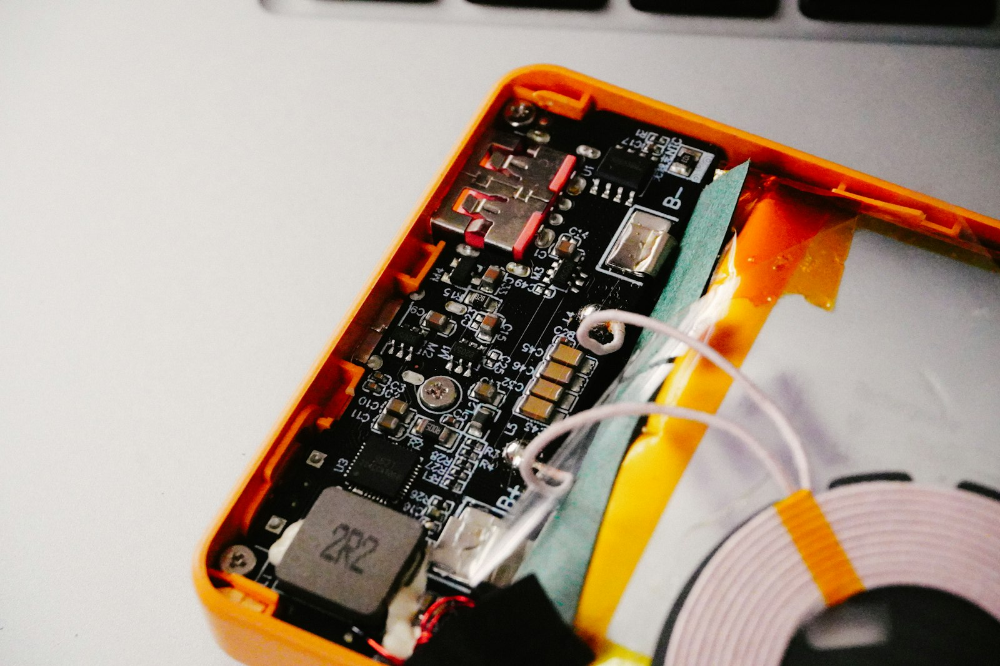
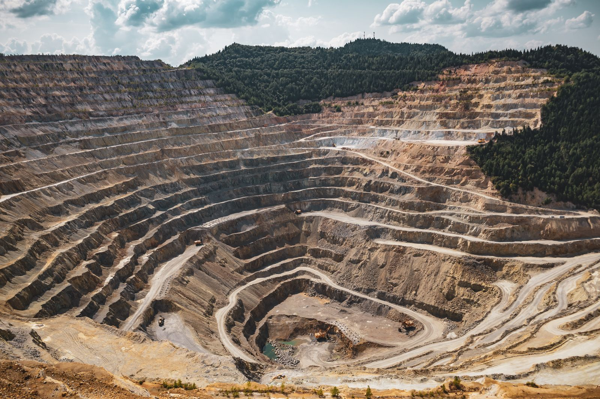

Kongo’nun Madenleri: Telefonundaki Kobaltın Bedeli
Cebindeki telefonun pilinde büyük ihtimalle bir parça Kongo var. Kobalt bataryaları, bakır şebekeleri, coltan elektronik cihazları besliyor. Aynı ülkenin doğusunda ise on milyonlarca insanı etkileyen bir savaş sürüyor ve finansmanında yine madenler var.

Tezim şu: Kongo’nun sorunu “kaynağı çok ama yönetemiyor” değil. Kaynaklar hep ülkenin dışındaki güçlerin hesabında ülkenin kendisinden daha değerli oldu. Bugün değişen, hesap yapanların sayısının artması ve Kinshasa’nın ilk kez kendi kozunu oynamaya çalışması.
Kobaltın yolculuğu
Yeşil: Kongo’nun kontrolünde · Toprak rengi: Çin’in kontrolünde · Gri: son kullanım
Kongo dünyanın en büyük kobalt, ikinci büyük bakır üreticisi. Washington’ın Çin’in hâkim olduğu mineral zincirlerine bağımlılığı azaltma çabasında da kilit ülke. Ama kobaltın değeri madende değil, rafinajda doğuyor ve rafinajın yaklaşık yüzde 65’i Çin’de yapılıyor.
İhracat için kurulmuş bir devlet
1885’te Belçika Kralı II. Leopold, Kongo havzasını kişisel mülkü olarak tanıttırdı. Fildişi, sonra lastik için zorla kota dayatıldı. 1908’de devleti Belçika devraldı ama mantık aynı kaldı: demiryolları madenleri limanlara bağladı, şehirleri birbirine değil. Bağımsızlıktan haftalar sonra kriz başladı, Lumumba öldürüldü, 1965’ten sonra Mobutu otuz yıl ülkeyi bir ganimet düzeni olarak yönetti. Ruanda soykırımının ardından doğuya taşan savaşlar 1998’de ikinci bir savaşa dönüştü.
Altyapı insanlar için değil, ihracat için kuruldu.
Madenler savaşı başlatmadı, çatışmanın kökleri etnik gerilimlere ve sınır güvenliğine uzanıyor. Ama madenler savaşın yakıtı: silahlı gruplara para, dış güçlere de çatışmanın uzamasında çıkar sağlıyor.
M23: Goma ve Bukavu nasıl düştü?
Ruanda’nın desteklediği M23, 2021’in sonunda yeniden ortaya çıktı (Kigali suçlamayı reddediyor). 27 Ocak 2025’te doğunun en büyük şehri Goma, 16 Şubat’ta Bukavu düştü. Sadece ilk iki ayda 700 binden fazla kişi yerinden edildi, Eylül 2025’te ülke içinde yerinden edilmiş kişi sayısı 5,7 milyona ulaştı. USAID’in çöküşüyle yardım fonları da azaldı.
Madenle bağ net: Global Witness’a göre M23, Nisan 2024’ten beri elinde tuttuğu Rubaya coltan madenlerinden ayda yaklaşık 800 bin dolar gelir elde ediyor. ABD Hazinesi Haziran 2026’da M23 ile koordinasyon içinde çalışan bir Ruanda altın rafinerisi ağına yaptırım uyguladı. 2026’nın başında en az 60 kilo altın bu yolla Kongo’dan Ruanda’ya geçmişti.
Washington Anlaşması: barış mı, mineral mi?
DKC ile Ruanda arasındaki anlaşma 27 Haziran 2025’te imzalandı. Ardından ABD’li şirketler lityum, bakır ve kobalt erişimi için harekete geçti. Eleştirmenlerin sorusu yerinde: aracı olan ülke aynı zamanda sonucun tarafıysa tarafsız olabilir mi? M23 lideri Nangaa, Mayıs 2026’da Rubio’ya yazdığı mektupta Washington’ı “asimetrik arabuluculukla” suçladı. Ağustos’taki nihai anlaşma tarihi kaçırıldı, Hazine’nin Ruanda Savunma Gücü’ne yönelik yaptırımları Mart’tan Haziran’a sürdü.
İlginç bir detay: Kinshasa, ABD’ye sunduğu stratejik varlık listesine M23’ün elindeki Rubaya’yı da ekledi. Mantığı, rebellerin elindeki toprağı Washington’a teklif ederek ticari çıkarı Kigali üzerinde güvenlik baskısına çevirmek.

Kinshasa’nın kozu: kobalt kotası
2024’te Kongo dünya kobalt arzının yüzde 70’inden fazlasını sağlıyordu ve fiyatlar çökmüştü. Şubat 2025’te ihracatı yasakladı, Ekim’de yasağı kaldırıp kota getirdi. 2026 için tavan 96.600 ton, yani 2024 üretiminin yarısından az. Glencore 2026’nın ilk çeyreğinde Kongo kobalt üretimini yüzde 39 kesip bakıra yöneldi.
Çin’e teslim kobalt hidroksit fiyatı kota duyurusundan sonra yükseldi, sonra yeniden geriledi:
Gücün sınırı belli. Çin’in batarya pazarında kobaltsız LFP payı yüzde 79’a çıktı, geri dönüştürülmüş kobaltın payı bir yılda yüzde 13’ten yüzde 34’e fırladı. Kongo piyasayı yönlendirebileceğini kanıtladı ama fiyat çok yükselirse alıcılar alternatif buluyor.
ABD’nin planı: erişim var, para nerede?
2025’te imzalanan stratejik mineral ortaklığı ABD’ye erişim, karşılığında yatırım ve istikrar vaat ediyor. İlk meyveler var: ABD destekli madenci Virtus Minerals, artan bakır ihracatı, Lobito Koridoru yatırımı. Ama 5 Kasım’daki Paris toplantısında ne yatırım tutarı ne takvim açıklandı. Dilolo-Sakania için 30 yıllık imtiyaz imzalandı, 1,26 ile 1,8 milyar dolarlık finansman kapanmadı. Lobito demiryolunun 753 milyon dolarlık finansmanı tamam ama Kongo’nun içindeki bölümü kapsamıyor.
Başarı imzalarla değil, tamamlanan projelerle ölçülmeli.
Ekonomi Bakanı Daniel Mukoko Samba, 6 Kasım 2026
Zaman çizelgesi
- 1885Leopold’ün Kongo’su: kralın özel mülkü
- 1960Bağımsızlık, Lumumba dönemi
- 1965Mobutu dönemi: otuz yıllık ganimet düzeni
- 1998İkinci Kongo Savaşı
- 2025Goma ve Bukavu düştü, Washington Anlaşması imzalandı
- 2026Paris toplantısı: yatırım tutarı açıklanmadı
Önümüzdeki dönemde izlenecekler
Doğuda barış sahada uygulanacak mı, yoksa Uvira’daki gibi geri adımlar mı gelecek? MONUSCO’nun görev süresi 20 Aralık 2026’da doluyor, yenilenip yenilenmeyeceği önemli bir işaret. Dilolo-Sakania’nın ve Lobito’nun Kongo bölümünün finansmanı kapanacak mı? Kobalt kotası gevşer mi, Çin’de geri dönüşüm artarsa Kongo’nun pazarlık gücü ne olur?
Son söz
Bu hikâyenin rahatsız edici yanı şu: Kongo yüz yıldan fazladır dünyanın ihtiyaç duyduğu şeyleri sağlıyor. Fildişi, lastik, bakır, kobalt, coltan. Ürün değişiyor, yapı değişmiyor: değer dışarı gidiyor, bedel içeride ödeniyor. Bugün fark, Kinshasa’nın masada oturması ve kozlarının farkında olması. Asıl sınav, imzalanan kâğıtların elektriğe, rafineriye ve güvenli bir doğuya dönüşüp dönüşmeyeceği.
Başlıca kaynaklar: PRIF (Temmuz 2026), Reuters/Mining.com (6 Kasım 2026), Rio Times, Discovery Alert, US Treasury (25 Haziran 2026), The Northern Miner/The Economist, Human Rights Watch World Report 2026, UNRIC, S&P Global, Fastmarkets, SMM, SunSirs, Geopolitical Monitor.
Veri notu: rakamlar 10 Kasım 2026 itibarıyla derlenen kaynaklara dayanır. Bu yazı bilgi amaçlıdır.